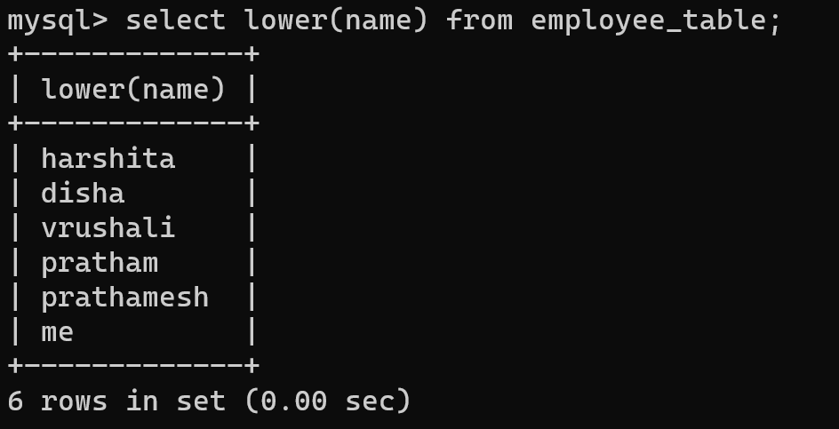
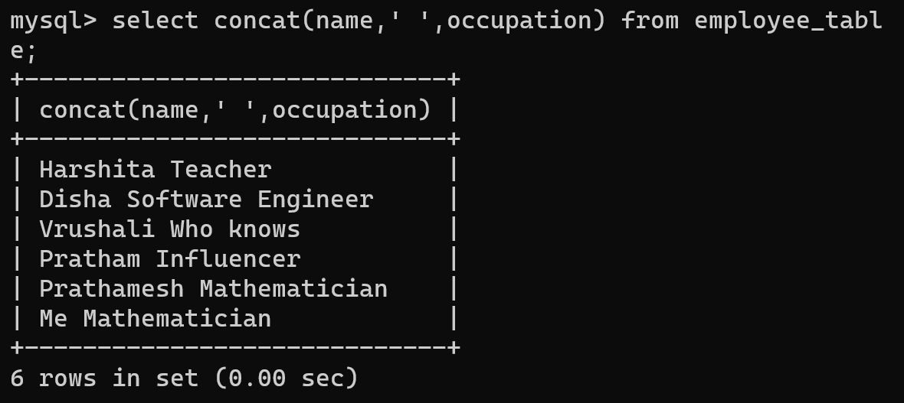
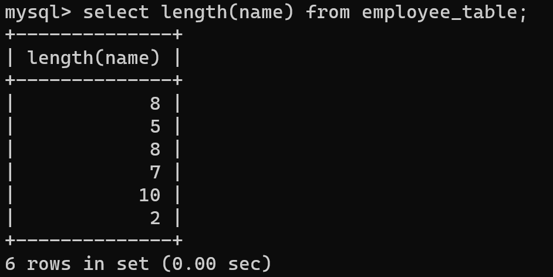
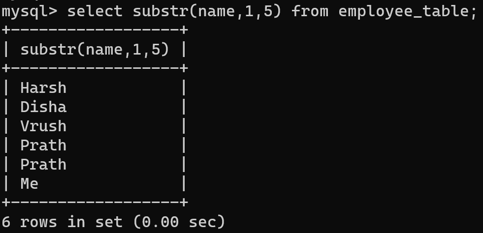

CHARACTER FUNCTION
Character functions accept character inputs and can return either characters or number values as output. SQL provides a number of different character datatypes which includes CHAR, VARCHAR, VARCHAR2, LONG, RAW, and LONG RAW. The various datatypes are categorized into three different datatypes :
1. VARCHAR2 - A variable-length character datatype whose data is converted by the RDBMS.
2. CHAR - The fixed-length datatype.
3. SQL provides a rich set of character functions that allow you to get information about strings and modify the contents of those strings in multiple ways.
Character functions are of the following two types:
Case-Manipulative Functions
1. LOWER : This function converts alpha character values to lowercase. LOWER will actually return a fixed-length string if the incoming string is fixed-length. LOWER will not change any characters in the string that are not letters, since case is irrelevant for numbers and special characters, such as the dollar sign ( $ ) or modulus ( % ).
Syntax:
LOWER(SQL course)

2. UPPER : This function converts alpha character values to uppercase. Also UPPER function too, will actually return a fixed-length string if the incoming string is fixed-length. UPPER will not change any characters in the string that are not letters, since case is irrelevant for numbers and special characters, such as the dollar sign ( $ ) or modulus ( % ).
Syntax:
UPPER(SQL course)

3. INITCAP : This function converts alpha character values to uppercase for the first letter of each word and all others in lowercase. The words in the string is must be separated by either # or _ or space.
Syntax:
INITCAP(SQL course)
Character-Manipulative Functions
1. CONCAT : This function always appends ( concatenates ) string2 to the end of string1. If either of the string is NULL, CONCAT function returns the non-NULL argument. If both strings are NULL, CONCAT returns NULL.
Syntax:
CONCAT('String1', 'String2')

2. LENGTH : This function returns the length of the input string. If the input string is NULL, then LENGTH function returns NULL and not Zero. Also, if the input string contains extra spaces at the start, or in between or at the end of the string, then the LENGTH function includes the extra spaces too and returns the complete length of the string.
Syntax:
LENGTH(Column|Expression)

3. SUBSTR : This function returns a portion of a string from a given start point to an end point. If a substring length is not given, then SUBSTR returns all the characters till the end of string (from the starting position specified).
Syntax:
SUBSTR('String',start-index,length_of_extracted_string)

4. INSTR : This function returns numeric position of a character or a string in a given string. Optionally, you can provide a position m to start searching, and the occurrence n of string. Also, if the starting position is not given, then it starts search from index 1, by default. If after searching in the string, no match is found then, INSTR function returns 0.
Syntax:
INSTR(Column|Expression, 'String', [,m], [n])